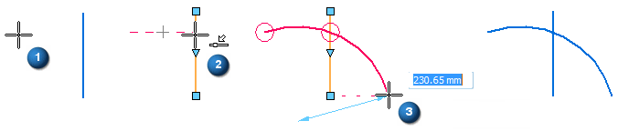
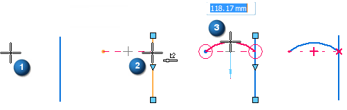

Example: Case Where a Relationship Is Not Maintained
Relationships cannot be maintained in certain cases, as in the following example.

-
Click the Arc By 3 Points command.
-
Click where you want the sweep of the arc to begin (1).
-
Move the cursor to a position where IntelliSketch recognizes a point on element relationship with a line on the drawing sheet (2).
-
When the Point On IntelliSketch relationship indicator is displayed at the cursor, click to define the second input point for the arc.
-
Move the cursor past the line and click (3).
The position of this input point defines it as the end of the sweep, making the point in the middle an unconstrainable key point. IntelliSketch recognizes this, and does not maintain the point on element relationship.
If the third input point for the arc had been between the first two points, then it would have been interpreted as the arc midpoint, making the second input point one end of the arc sweep. In this case, the point would have been constrainable, and IntelliSketch would have maintained the point on element relationship.

How do I
Draw with IntelliSketchExample: Draw a line
Example: Draw a horizontal line
Example: Draw a line connected to another line
Example: Draw an arc
Example: Establish More Than One Relationship
Suspend or remove geometric relationships
Look up more details
IntelliSketch commandAlignment Indicator command
Locate Background command